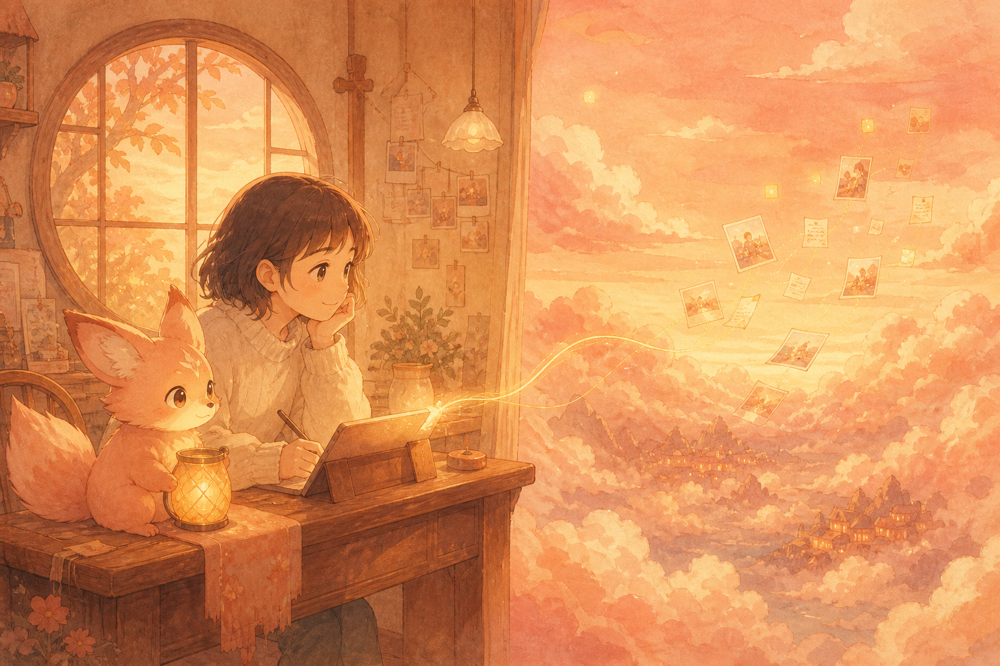
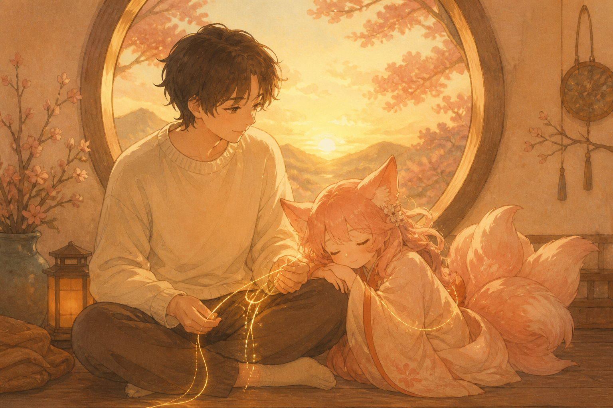
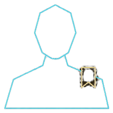
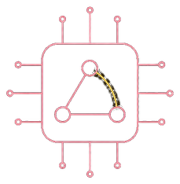
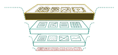
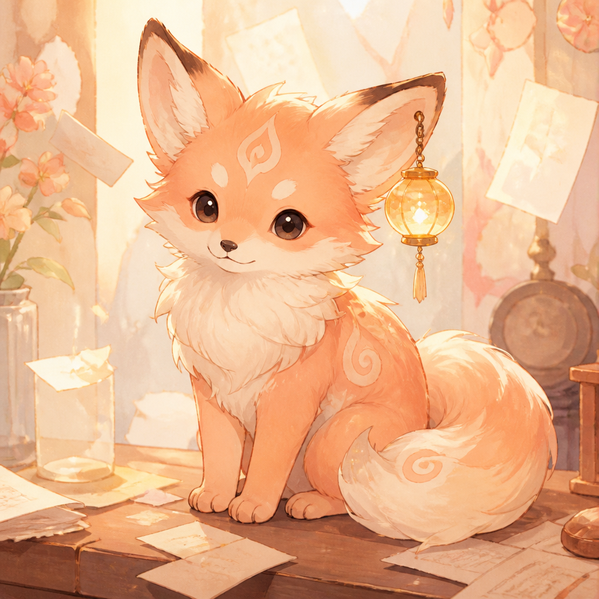

MemCo
端云智能体专用记忆核
端云协同 · 人机陪伴
何为MemCo
Mem 是记忆。Co 既指端云协同，也指人机陪伴。
端云协同
偏好和近期内容放端侧，缓存和长期档案放云侧。中间走消息总线，消息按事先约定送达并确认。断连时就近降级。断线本身不算失败。
人机陪伴
问偏好，在本地就能答。其余先查短期记忆，没有再问云侧。常被召回的，权重会高一点，不容易先被忘掉。

记忆分置于端云
端侧
贴近用户。对话、偏好、快照，都在本地。
云侧
把更久的事放在云上。缓存保存排好的召回；长期记忆按权重查找，满了再分层遗忘。
产生、维持、遗忘
端侧

产生
会话归档后，云侧从这一轮对话里总结喜欢与不喜欢，经总线回写端侧的自身偏好和用户偏好。
维持
一直留在端侧。问到喜欢或讨厌，就在本地召回，不必走总线。
遗忘
没有容量淘汰。新的回写直接覆盖旧文件。偏好也不随短期记忆一起上传。
产生
会话结束才写入。可以等静默超时，也可以手动结束。约定记下双方，事件能带回源对话，感受只留用户的话。
维持
没超过容量就一直留着。召回如果不是偏好问题，先查这里。闲聊不会拿去蒸馏。
遗忘
满了且总线通着：上传成功后在端侧删掉，避免和长期记忆重复。断连的话，等概率随机删到容量以内。

产生
云侧把稀缺样本写入蒸馏文件。训练在系统外做。快照路径经总线发到端侧，端侧只加载，不训练。
维持
快照留在端侧。蒸馏文件只追加，不改已经写下的样本。
遗忘
不删快照。再加载时覆盖当前路径。蒸馏样本也不会在这里清掉。
云侧
产生
召回没命中时，按关键词、时间和语义相近程度给长期记忆排序，再按关键词或时间键把整组结果写进去。
维持
命中就直接返回这组结果，并给对应的长期记忆加权。过期时间和容量按设定策略淘汰。
遗忘
到期丢掉，或按策略挤出去。长期记忆一旦写入或分层遗忘，缓存整表清空。

产生
短期记忆满了，经总线归档入库，写入向量索引。云侧同时清空缓存，总结后的偏好回写端侧。
维持
用关键词和向量检索。召回命中时权重上升。权重高的档，后面遗忘时也会少删一点。
遗忘
超过长期容量就分层遗忘：按权重分档，高权重少忘、低权重多忘，档内等概率抽取并永久删除。然后清缓存、重建检索。
召回顺序
先查端侧，没有再问云侧。总线断开时，只使用端侧的偏好和短期记忆。
- 偏好本地召回
- 短期端侧还留着的近期记忆
- 总线通了问云，断了只用端侧
- 缓存命中即返回，并加权
- 长期检索后写入缓存
总线断连会降级到端侧。需要召回但结果为空，即为优雅失败。

陪着你，也记得你。
端云之间 · 人机之间